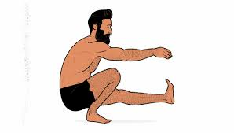
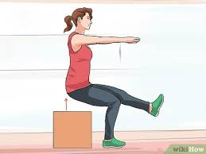

Técnica · En casa · 11 de junio de 2021
Sentadilla a una pierna (pistol squat)

Sentadilla Pistol o Sentadilla a una pierna
Introducción
Las Pistol Squats o sentadillas a una pierna son un ejercicio avanzado de calistenia que combina fuerza, equilibrio, coordinación y movilidad. Este movimiento trabaja intensamente los músculos del tren inferior y el core, siendo ideal para quienes buscan un desafío físico. A continuación, te explicamos cómo realizarlas correctamente y qué músculos se benefician.
Cómo ejecutar una Pistol Squat correctamente
Sigue estos pasos para realizar una Pistol Squat con buena técnica:
Posición inicial:
Párate sobre una pierna, con el pie de apoyo firmemente plantado en el suelo.
Extiende la otra pierna hacia adelante, manteniéndola recta y paralela al suelo.
Extiende ambos brazos hacia el frente para ayudar a mantener el equilibrio.
Mantén la espalda recta, el core activado y la mirada al frente para una postura estable.
Descenso:
Inicia el movimiento llevando la cadera hacia atrás, como si fueras a sentarte en una silla.
Flexiona la rodilla de la pierna de apoyo, descendiendo lentamente de forma controlada.
Mantén la pierna libre extendida y elevada, evitando que el talón toque el suelo.
Baja hasta que la cadera esté a la altura de la rodilla o ligeramente por debajo, manteniendo el equilibrio.
Ascenso:
Empuja con el talón de la pierna de apoyo para volver a la posición inicial.
Mantén la espalda erguida y el core activado durante todo el movimiento.
Evita inclinarte hacia adelante o perder el equilibrio.
Recomendaciones:
Principiantes: Realiza 2-3 series de 3-5 repeticiones por pierna, usando apoyo (como una silla o pared) si es necesario.
Intermedios/Avanzados: Realiza 3-4 series de 6-10 repeticiones por pierna.
Descansa 30-60 segundos entre series.
Músculos trabajados
Las Pistol Squats son un ejercicio de cuerpo completo que se enfoca principalmente en el tren inferior, pero también involucra otros grupos musculares:
Cuádriceps: Principalmente responsables de la extensión de la rodilla.
Glúteos: Especialmente el glúteo mayor, que se activa al empujar hacia arriba.
Isquiotibiales: Ayudan en la estabilización y flexión de la cadera.
Core: Abdominales y oblicuos trabajan isométricamente para mantener el equilibrio y la postura.
Músculos estabilizadores: Incluyen los gemelos y los músculos de la cadera, que contribuyen al control del movimiento.
Consejos para una técnica segura
Calentamiento: Realiza movilidad articular y estiramientos dinámicos para preparar caderas, rodillas y tobillos.
Progresión gradual: Si eres principiante, empieza con variaciones más fáciles, como sentadillas asistidas o usando una caja para limitar el rango de movimiento.
Equilibrio: Usa los brazos extendidos o un punto fijo en la pared para ayudarte a mantener la estabilidad.
Superficie: Realiza el ejercicio en un suelo plano y antideslizante para evitar caídas.
Respiración: Inhala al descender y exhala al subir para mantener el control.
Consulta profesional: Si tienes problemas de movilidad o lesiones en rodillas o caderas, consulta a un entrenador o fisioterapeuta antes de intentar Pistol Squats.
Variaciones para todos los niveles
Para principiantes:
Pistol Squat asistida: Agárrate de una silla, pared o banda TRX para apoyar el equilibrio.
Pistol Squat a una caja: Baja hasta sentarte en una superficie elevada y luego sube.
Para intermedios:
Pistol Squat parcial: Limita el rango de descenso para trabajar la técnica.
Pistol Squat con contrapeso: Sostén un peso ligero (como una mancuerna) frente al pecho para mejorar el equilibrio.
Para avanzados:
Pistol Squat con peso: Añade una mancuerna o kettlebell para mayor intensidad.
Pistol Squat en superficie inestable: Realízala en una tabla de equilibrio para trabajar aún más la estabilidad.
Beneficios de las Pistol Squats
Fuerza funcional: Mejora la fuerza en una sola pierna, útil para deportes y actividades diarias.
Equilibrio y coordinación: Desafía la estabilidad, fortaleciendo los músculos estabilizadores.
Movilidad: Aumenta la flexión de cadera, rodilla y tobillo.
Fortalecimiento del core: Mejora la estabilidad central, beneficiando la postura.
Versatilidad: No requiere equipo y puede realizarse en cualquier lugar.
Ejemplo de rutina con Pistol Squats
Calentamiento (5-7 minutos): Movilidad de caderas, tobillos y trote suave.
Circuito (3-4 rondas):
Pistol Squats (o variación asistida): 5-8 repeticiones por pierna.
Plancha frontal: 20-30 segundos.
Sentadillas convencionales: 12-15 repeticiones.
Descanso: 30 segundos entre rondas.
Enfriamiento (5 minutos): Estiramientos para cuádriceps, isquiotibiales y glúteos.

Con esta imagen se muestra la forma y ayuda que se pueden utilizar para la realización del ejercicio. Con las ayudas obtenemos la progresividad para la ejecución perfecta del ejercicio.

Conclusión
Las Pistol Squats son un ejercicio avanzado que combina fuerza, equilibrio y movilidad, ideal para quienes buscan llevar su entrenamiento al siguiente nivel. Con una técnica adecuada y una progresión gradual, puedes aprovechar sus beneficios para fortalecer el tren inferior, mejorar la estabilidad y aumentar la confianza en tu cuerpo. ¡Incorpora las Pistol Squats a tu rutina y desafía tus límites!